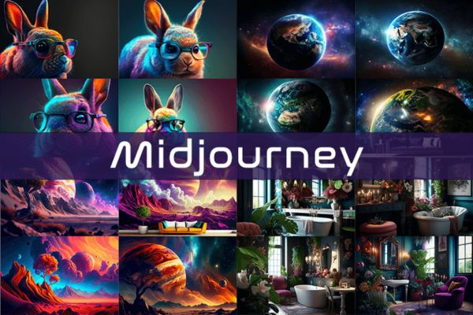

MIDJOURNEY
2.1. Đặc trưng nổi bật
Midjourney là phần mềm tạo hình ảnh bằng AI qua nền tảng Discord, giúp người dùng có thể nhận phản hồi từ cộng đồng, đặc biệt là trong quá trình thiết kế hình ảnh nghệ thuật. Ứng dụng này còn cho phép người dùng dễ dàng tạo ra các hình ảnh từ văn bản với phong cách độc đáo, từ hiện đại cho đến siêu thực thay vì phải sử dụng phần mềm thiết kế đồ hoạ chuyên nghiệp.
Đặc trưng nổi bật của Midjourney:
- Midjourney – nền tảng chuyên tạo ảnh nghệ thuật độc đáo từ văn bản.
2.2. Ưu điểm
- Giao diện sử dụng dễ hiểu, khả năng hỗ trợ và tương tác tốt từ cộng đồng trên Discord.
- Phong cách hình ảnh rất nghệ thuật, độc đáo và cuốn hút.
- Đối tượng phù hợp: Nhiếp ảnh gia và những người dùng yêu thích phong cách siêu thực, kỳ ảo.
2.3. Nhược điểm
- Hạn chế người dùng, đặc biệt là những người không quen thuộc với nền tảng Discord.
- Một số tính năng cao cấp yêu cầu trả phí hàng tháng.
2.4. Chi phí theo gói sử dụng
- Miễn phí: Cho phép người dùng thử nghiệm tạo hình ảnh nhưng với số lượng hạn chế.
- Basic Plan: $10/tháng – cung cấp khoảng 200 hình ảnh/tháng, hỗ trợ cơ bản qua Discord.
- Standard Plan: $30/tháng – truy cập không giới hạn, cho phép tạo ảnh không giới hạn, có thêm quyền truy cập ưu tiên.
- Pro Plan: $60/tháng – cung cấp các tính năng cao cấp và hỗ trợ tốt hơn, thích hợp cho các dự án chuyên nghiệp hoặc cần tốc độ cao.